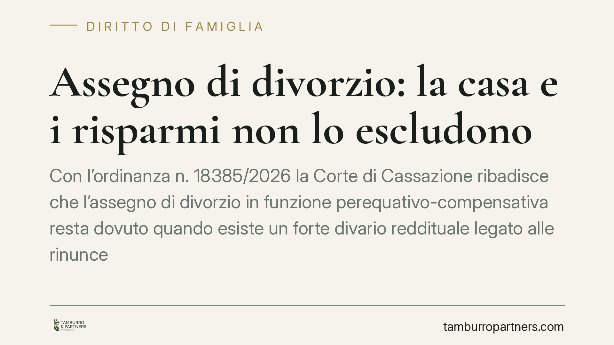

Assegno di divorzio: la casa e i risparmi non lo escludono
Con l'ordinanza n. 18385/2026 la Corte di Cassazione ribadisce che l'assegno di divorzio in funzione perequativo-compensativa resta dovuto quando esiste un forte divario reddituale legato alle rinunce professionali di un coniuge. Non lo esclude né l'assegnazione della casa coniugale né la presenza di risparmi personali: conta il contributo dato alla vita familiare.

Il caso
Una coppia divorzia dopo anni di matrimonio. Lui è medico, con un reddito nettamente superiore; lei ha ridotto o abbandonato la propria attività professionale per dedicarsi alla famiglia. Il giudice di merito riconosce alla donna l'assegno di divorzio. Lui impugna, sostenendo che l'ex moglie disponeva già della casa assegnata e di risparmi personali, e che quindi l'assegno non fosse giustificato.
La Cassazione, con l'ordinanza n. 18385/2026, respinge questa lettura. L'assegno di divorzio non è un meccanismo che scatta solo in caso di indigenza del coniuge richiedente: ha anche una funzione di riequilibrio, destinata a compensare chi ha sacrificato la propria crescita professionale a vantaggio del progetto familiare comune.
Inquadramento normativo
Il riferimento è l'art. 5, comma 6, della legge 1° dicembre 1970 n. 898 (legge sul divorzio). La norma prevede l'attribuzione dell'assegno tenendo conto di una serie di criteri: le condizioni dei coniugi, le ragioni della decisione, il contributo personale ed economico dato da ciascuno alla conduzione familiare e alla formazione del patrimonio comune, il reddito di entrambi, il tutto valutato anche in rapporto alla durata del matrimonio.
La svolta interpretativa risale alle Sezioni Unite n. 18287/2018, che hanno abbandonato il criterio del solo "tenore di vita" matrimoniale e hanno riconosciuto all'assegno una triplice natura: assistenziale (sostegno a chi non ha mezzi adeguati), compensativa (riconoscimento dei sacrifici fatti) e perequativa (riequilibrio delle posizioni economiche). L'ordinanza del 2026 si colloca su questa linea e la rafforza.
Cosa significa in concreto
Il punto centrale è che la funzione perequativo-compensativa opera a prescindere dallo stato di bisogno del richiedente. In altri termini: non è necessario che l'ex coniuge sia privo di mezzi. È sufficiente dimostrare che la sperequazione reddituale attuale è la conseguenza di scelte condivise durante il matrimonio, come la rinuncia o il ridimensionamento della carriera per occuparsi della famiglia.
Da qui due conseguenze rilevanti:
- L'assegnazione della casa coniugale non neutralizza l'assegno. L'assegnazione risponde in primo luogo all'interesse dei figli e segue una logica diversa. Non costituisce un "pagamento" sostitutivo del riequilibrio economico tra gli ex coniugi.
- La presenza di risparmi personali non è di per sé ostativa. Possedere un capitale non cancella il divario di reddito corrente, né il merito dei sacrifici compiuti. Il giudice valuta la situazione complessiva, non un singolo elemento isolato.
Per il coniuge economicamente più forte, questo significa che non basta allegare che l'altro "ha la casa" o "ha dei risparmi" per ottenere l'esonero. Per il coniuge più debole, significa che il contributo dato alla vita familiare ha un valore giuridicamente riconosciuto, che va però provato, non semplicemente affermato.
L'onere della prova
È qui che si gioca la causa. Chi chiede l'assegno in funzione compensativa deve dimostrare il nesso tra le scelte compiute durante il matrimonio e l'attuale squilibrio economico. Serve ricostruire il percorso professionale interrotto o rallentato, le ragioni di quella scelta e i vantaggi che ne ha tratto l'altro coniuge o il nucleo familiare. Dichiarazioni generiche sul proprio "sacrificio" non bastano.
Cosa fare in concreto
- Ricostruite la storia professionale. Raccogliete documentazione su carriere interrotte, dimissioni, mancati avanzamenti, periodi di dedizione esclusiva alla famiglia.
- Documentate il divario reddituale attuale. Dichiarazioni fiscali, buste paga, estratti e visure patrimoniali di entrambi i coniugi servono a quantificare la sperequazione.
- Non confondete i piani. Tenete distinta l'assegnazione della casa (legata ai figli) dall'assegno di divorzio (legato al riequilibrio tra coniugi): sono questioni autonome.
- Preparate la prova del nesso causale. È il cuore della richiesta compensativa: collegate le scelte passate allo squilibrio presente con elementi concreti.
- Valutate la situazione complessiva con un professionista. Ogni posizione va analizzata nel suo insieme, perché l'esito dipende dall'equilibrio tra tutti i criteri dell'art. 5.
---
*Contributo informativo a cura di Tamburro & Partners - Avv. Giuseppe Tamburro. Non costituisce parere legale.*
Ogni famiglia ha il suo equilibrio.
Separazione, divorzio, affidamento, assegno: se vuoi un confronto riservato su una specifica situazione, scrivi allo studio. Ti rispondiamo entro un giorno lavorativo.